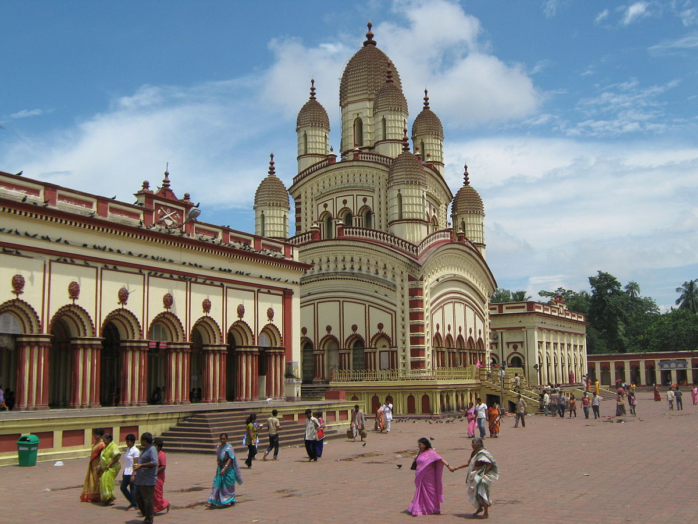
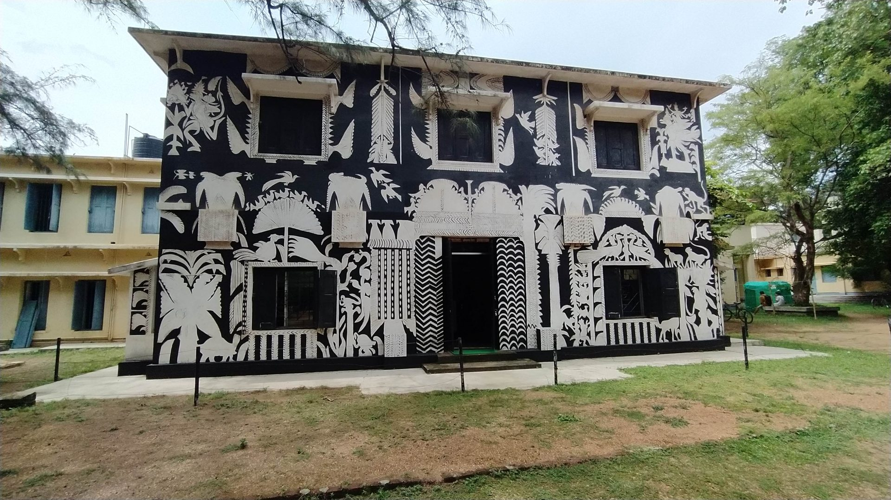

Itinerary
Day 1: Arrival in Kolkata
- Arrive in Kolkata, the capital city of West Bengal.
- Check into your hotel and rest after your journey.
- Explore local markets and enjoy traditional Bengali cuisine for dinner.
Day 2: Kolkata Sightseeing
- Visit iconic landmarks in Kolkata such as Victoria Memorial, Howrah Bridge, and St. Paul's Cathedral.
- Explore the vibrant streets of Park Street and indulge in local street food.
- Optional: Visit Dakshineswar Kali Temple and Belur Math for a spiritual experience.
Day 3:Hooghly Imambara Visit
- Travel to Hooghly from Kolkata (approx. 1-2 hours by road or train).
- Explore the Hooghly Imambara, including the prayer halls, courtyards, clock tower, and historical artifacts.
- Enjoy a traditional Bengali lunch at a local restaurant.
- Visit nearby attractions such as Hooghly Riverfront and other historical sites.
Day 4:Chandannagar Excursion
- Take a day trip to Chandannagar, a historic French colony near Hooghly (approx. 1 hour from Hooghly).
- Visit Chandannagar Museum, Chandannagar Strand, and explore colonial-era architecture.
- Experience the blend of French and Bengali culture and cuisine.
- Return to Hooghly in the evening.
Day 5: Local Exploration and Departure
- Spend the morning exploring local markets in Hooghly for souvenirs and local crafts.
- Visit other nearby attractions like Bandel Church or Tribeni for a cultural experience.
- Depart from Hooghly and travel back to Kolkata for your onward journey.
Places to Visit
Hooghly Imambara, Hooghly, West Bengal (Mosque)

- The Hooghly Imambara in Hooghly, West Bengal, is a significant Islamic monument and a prominent religious and cultural landmark in the region.
- Founder:The Hooghly Imambara was built by Hazi Mohammad Mohsin, a wealthy philanthropist and a prominent figure in the Shia Muslim community during the 19th century.
- Purpose:The construction of the Imambara served both religious and social purposes. It provided a place of worship for the Shia Muslims and also served as a gathering hall for community events and ceremonies.
- Islamic Influence:The architecture of the Hooghly Imambara reflects traditional Islamic styles, characterized by domes, arches, minarets, and intricate ornamentation.
- Central Prayer Hall:The main prayer hall (Musallah) is the focal point of the complex, where worshippers gather for prayers and religious gatherings.
- Clock Tower:A notable feature of the Imambara complex is its historic clock tower, adding to the architectural charm of the site and serving as a timekeeping element for the community.
- Community Center: Beyond its religious significance, the Hooghly Imambara has historically served as a center for community activities, social gatherings, and cultural events within the Shia Muslim community.
- Heritage Preservation:The Imambara stands as a testament to the cultural and architectural heritage of the region, representing the contributions of Hazi Mohammad Mohsin and the Shia Muslim community to the local history and traditions.
- Historical Insights:Visitors to the Hooghly Imambara can gain insights into the history, architecture, and cultural practices associated with Shia Islam in Bengal during the 19th century.
- Architectural Marvel:The intricate details of the Imambara's architecture, including its courtyards, gardens, prayer halls, and historical artifacts, offer a visual treat for architecture enthusiasts and history buffs.
- Spiritual Atmosphere:The serene ambiance of the complex, coupled with the religious activities and rituals observed by worshippers, creates a spiritual atmosphere that visitors can experience and appreciate.
History:
Architecture:
Cultural Significance:
Visitor Experience:
Overall, the Hooghly Imambara stands as a symbol of religious devotion, architectural beauty, and cultural heritage, inviting visitors to explore its history, marvel at its architecture, and embrace the cultural richness it represents in West Bengal.
Kolkata (Calcutta)
Victoria Memorial


- The Victoria Memorial in Kolkata is an iconic marble building and museum dedicated to Queen Victoria. It showcases British Raj history through exhibits and artifacts. The memorial's stunning architecture and lush gardens make it a must-visit historical landmark in West Bengal.
- Queensway, Kolkata, West Bengal, India.
- Commissioned in 1901, completed in 1921.
- Indo-Saracenic Revival architecture, combining British and Mughal elements.
- Built in memory of Queen Victoria to celebrate her 25 years of rule in India.
- Constructed using white Makrana marble from Rajasthan.
- Dome: Central octagonal dome with a height of 184 feet, topped by a figure of Victory.
- Museum: Houses a museum with a vast collection of artifacts, paintings, and memorabilia from British colonial history in India.
- Gardens: Surrounding gardens with pathways, lawns, and numerous statues.
- Collection includes portraits, weapons, textiles, manuscripts, and rare photographs depicting Indian history during the British Raj.
- Open to visitors from Tuesday to Sunday (closed on Mondays).
- Entry fees and guided tour options available.
- Photography allowed in designated areas.
- Symbolizes Kolkata's colonial heritage and serves as a prominent cultural and educational center.
- Well-connected by public transport, including buses, taxis, and the Kolkata Metro.
- Maidan, St. Paul's Cathedral, and other historic sites within Kolkata.
Location:
Built:
Architectural Style:
Purpose:
Materials:
Features:
Notable Exhibits:
Visitor Information:
Significance:
Accessibility:
Nearby Attractions:
Victoria Memorial is not only an architectural marvel but also a repository of historical artifacts and a significant landmark representing Kolkata's rich colonial past and cultural heritage.
Howrah Bridge


- The Howrah Bridge, an iconic cantilever bridge spanning the Hooghly River in Kolkata, India, is a symbol of engineering prowess and Kolkata's heritage. Built in 1943 without nuts and bolts, its unique design and night illumination attract tourists. A vital transportation link, it handles heavy traffic and offers panoramic views of the river and city skyline, embodying Kolkata's resilience and architectural splendor.
- Spans over the Hooghly River, connecting Kolkata to Howrah in West Bengal, India.
- Cantilever bridge without any nuts and bolts, using riveting technique in its construction.
- Completed in 1943, replacing the old pontoon bridge, and is one of the busiest bridges in the world.
- Total length is approximately 705 meters, with a suspended span of 457 meters between the towers.
- A vital transportation link for vehicles, pedestrians, and a tram line; symbolizes Kolkata's heritage and engineering marvel.
- Unique truss and girder design with a single span, making it a distinctive landmark of Kolkata.
- Beautifully illuminated at night, enhancing its aesthetic appeal and attracting tourists and locals alike.
- Handles a massive volume of daily traffic, including pedestrians, vehicles, and even vendors, creating a bustling atmosphere.
- Visitors can enjoy panoramic views of the Hooghly River, Kolkata skyline, and bustling river activities from the bridge.
- Witnessed significant events such as the independence movement and continues to be a symbol of Kolkata's resilience and progress.
- Regularly maintained to ensure safety and structural integrity, reflecting the city's commitment to preserving its iconic structures.
Location:
Type:
Construction:
Length:
Significance:
Architectural Style:
Night Illumination:
Traffic:
Tourist Attraction:
Historical Context:
Maintenance:
Dakshineswar Kali Temple
Dakshineswar Kali Temple, located near Kolkata in West Bengal, is a famous Hindu temple dedicated to Goddess Kali.
Location:
History and Significance:
Tourist Highlights:
Tips for Visitors:
Visiting Dakshineswar Kali Temple offers a blend of spirituality, cultural heritage, and architectural beauty, making it a must-visit destination for tourists exploring Kolkata and its surrounding areas.
Hooghly District
Bandel Church
Bandel Church, also known as the Basilica of the Holy Rosary, is a significant historical and religious site located in Bandel, West Bengal, India.
History:
Architecture:
Religious Significance:
Tourist Experience:
Visitation:The church displays artifacts and relics depicting its rich history, including colonial-era paintings, statues, and religious items.
Scenic Surroundings:Bandel Church is situated near the Hooghly River, offering picturesque views and a serene ambiance for visitors.
Local Market:Explore the nearby market for souvenirs, local crafts, and traditional Bengali snacks.
Visitor Tips:
Timing: Check the church's opening hours before planning your visit, as it may have specific visiting hours.
Attire: Dress modestly and respectfully, especially if visiting during religious services or events.
Guided Tours:Consider joining guided tours or hiring a local guide to learn about the church's history, architecture, and religious significance in detail.
Combined Trip:Combine your visit to Bandel Church with nearby attractions such as Hooghly Imambara and Chandannagar for a comprehensive cultural experience.
Bandel Church offers a blend of historical, religious, and architectural attractions, making it a must-visit destination for tourists interested in exploring West Bengal's colonial heritage and Christian religious sites.
Darjeeling
Darjeeling Himalayan Railway (Toy Train)

The Darjeeling Himalayan Railway, affectionately known as the Toy Train, is a UNESCO World Heritage Site and a major tourist attraction in Darjeeling, West Bengal.
History and Significance:
Route and Journey Experience:
Train Services:
Important Tips for Tourists:
Safety and Regulations:
Preservation Efforts:
Experiencing the Darjeeling Himalayan Railway offers not just a scenic journey but also insights into the region's history, culture, and engineering marvels, making it a memorable experience for tourists visiting Darjeeling.
Sundarbans

Sundarbans National Park: UNESCO World Heritage site known for mangrove forests, Royal Bengal tigers, and diverse wildlife.
Boat Tours: Explore the intricate network of waterways on guided boat tours to spot wildlife and experience the unique ecosystem.
Shantiniketan:
 Visva-Bharati University: Founded by Rabindranath Tagore, known for its connection to Tagore's works and educational philosophy.
Kala Bhavana: Art college within Visva-Bharati University, showcasing traditional and contemporary art forms.
Sangeet Bhavana: Music department offering courses in Indian classical music.
Murshidabad
Hazarduari Palace: 19th-century palace with 1000 doors, now a museum displaying artifacts and history of Bengal.
Katra Masjid: Historic mosque with impressive architecture and cultural significance.
Digha and Mandarmani
Digha Beach: Popular seaside destination with sandy beaches and water sports.
Mandarmani Beach: Tranquil beach known for its long stretch of sand and scenic beauty.